Week 10 — Ideation & Prototyping
Creative Inquiry — Visual Field Study
For the first round of our field research, I visited several blocks around Times Square in New York City to collect and document disruptive sounds in the urban environment. I focused on observing how different sounds exist within public spaces and how they interact with the surrounding visual environment.
During my visit, I collected audio recordings, photographs, colors, textures, and visual details from the streets. Rather than focusing only on the sounds themselves, I wanted to explore the relationship between what we hear and what we see, and how visual elements might communicate the experience of disruptive noise.
01
Sound Recordings
I recorded eight audio samples while walking through the streets surrounding Times Square. These recordings document different moments of the city's soundscape, allowing me to revisit and compare the sounds I encountered during my field observation.
Sound 01
ambulance
Sound 02
Car Horn
Sound 03
Car Horn 2
Sound 04
Construction
Sound 05
Crowd
Sound 06
Road
Sound 07
Street
Sound 08
Truck Noise
02
Photo Documentation
Alongside the audio recordings, I photographed the surrounding streets, objects, and urban environments. These images provide visual context for the sounds I collected and help document the atmosphere of the locations I visited.
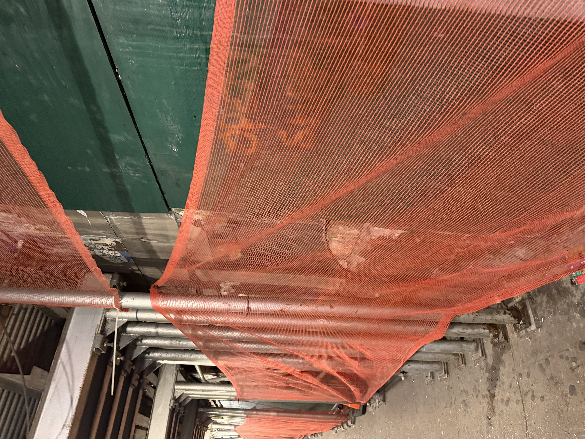
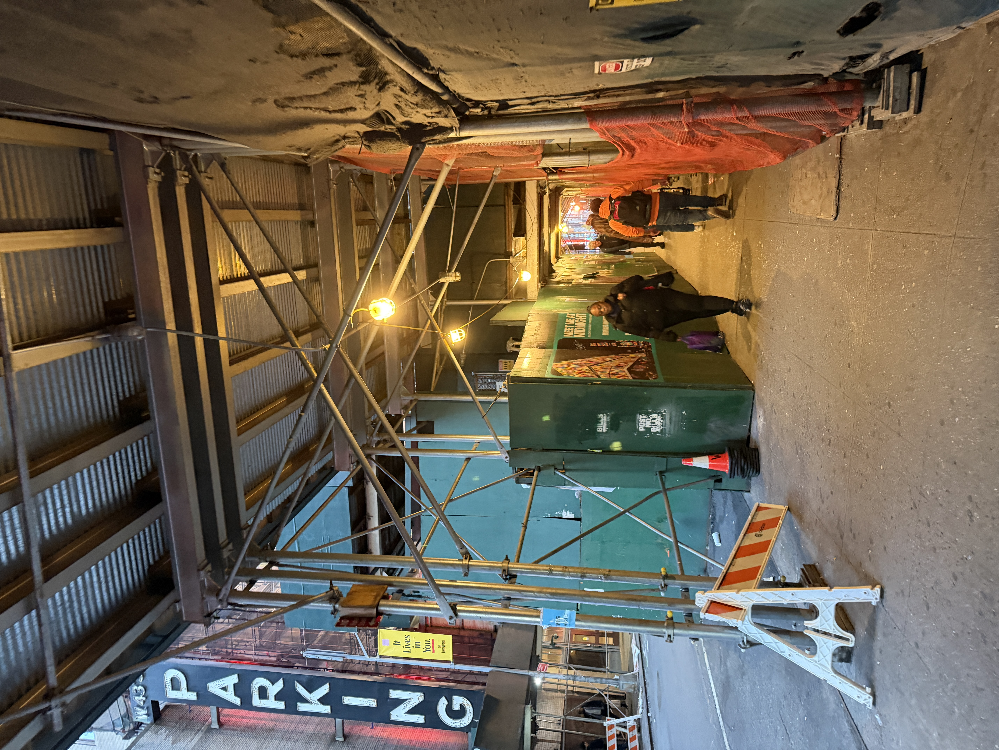
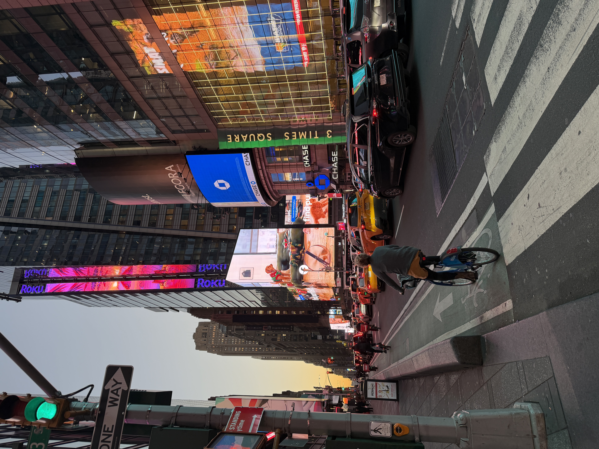
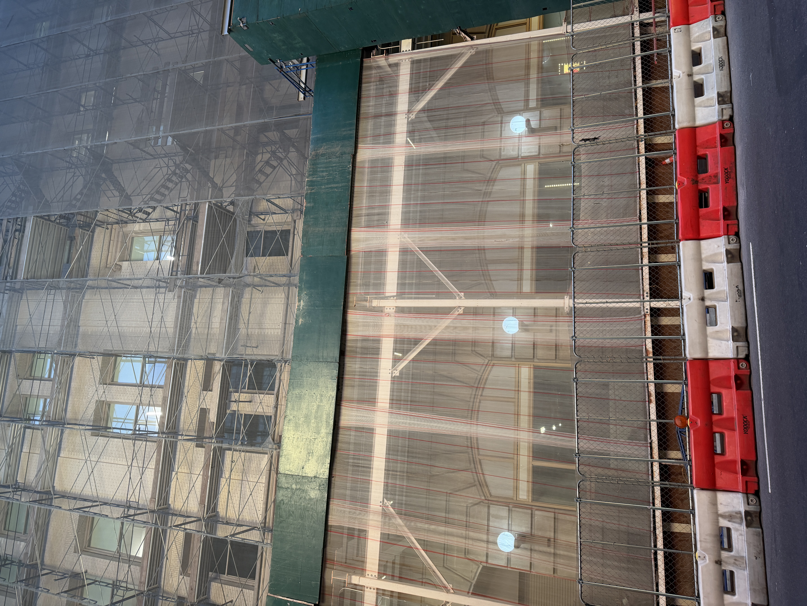
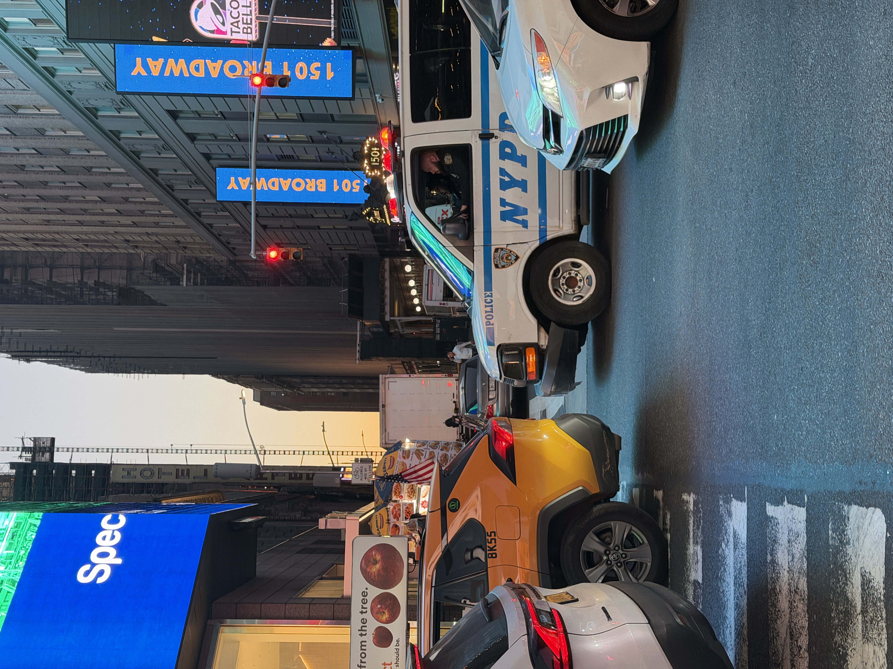
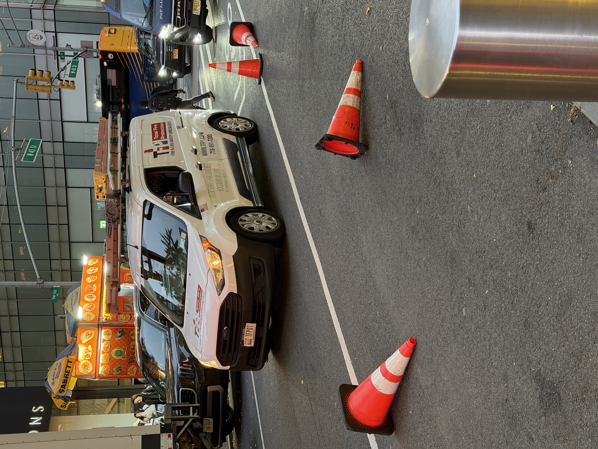
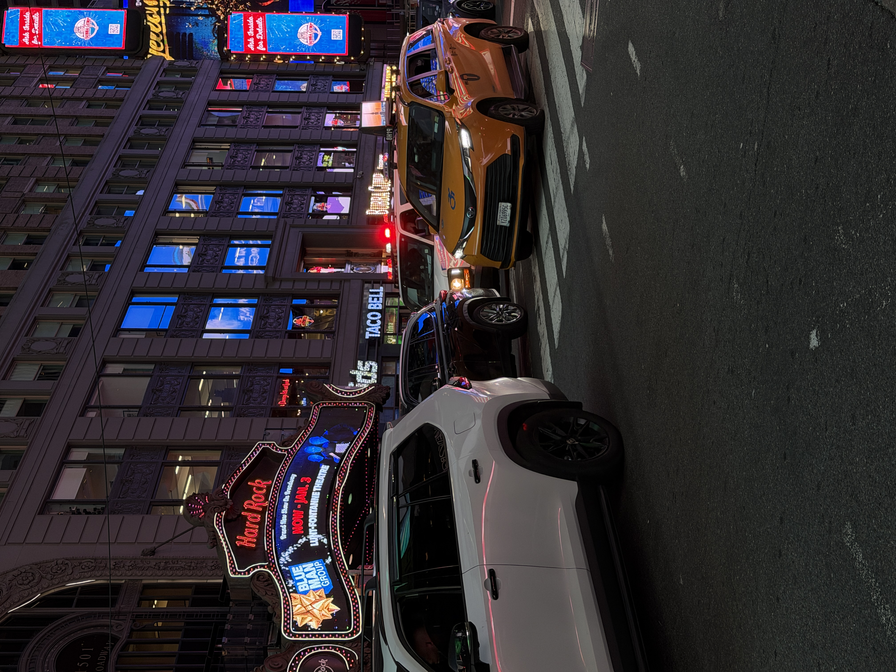
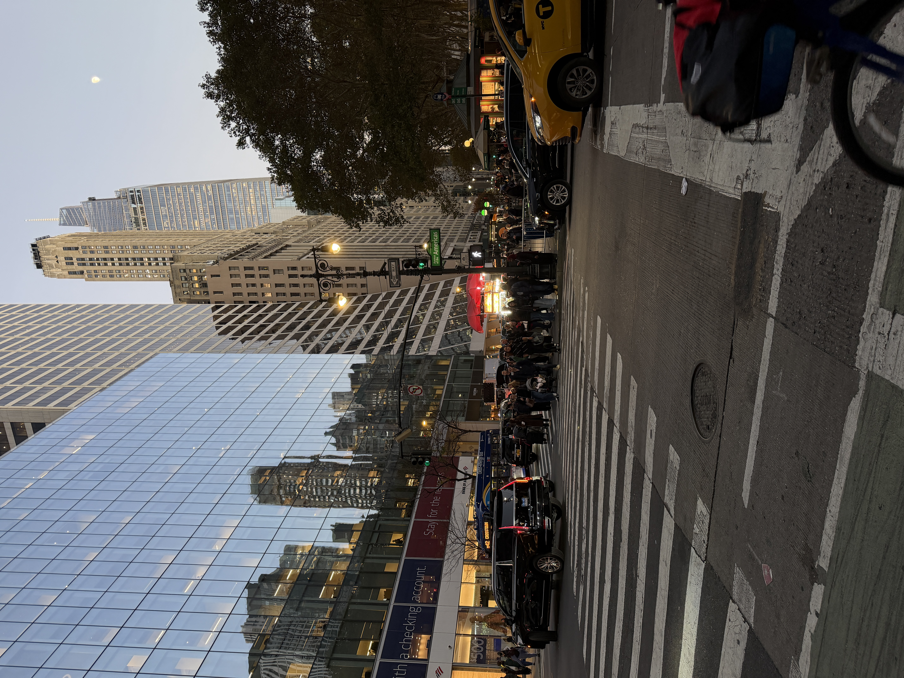
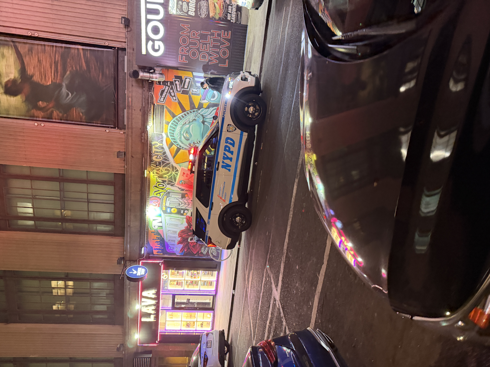
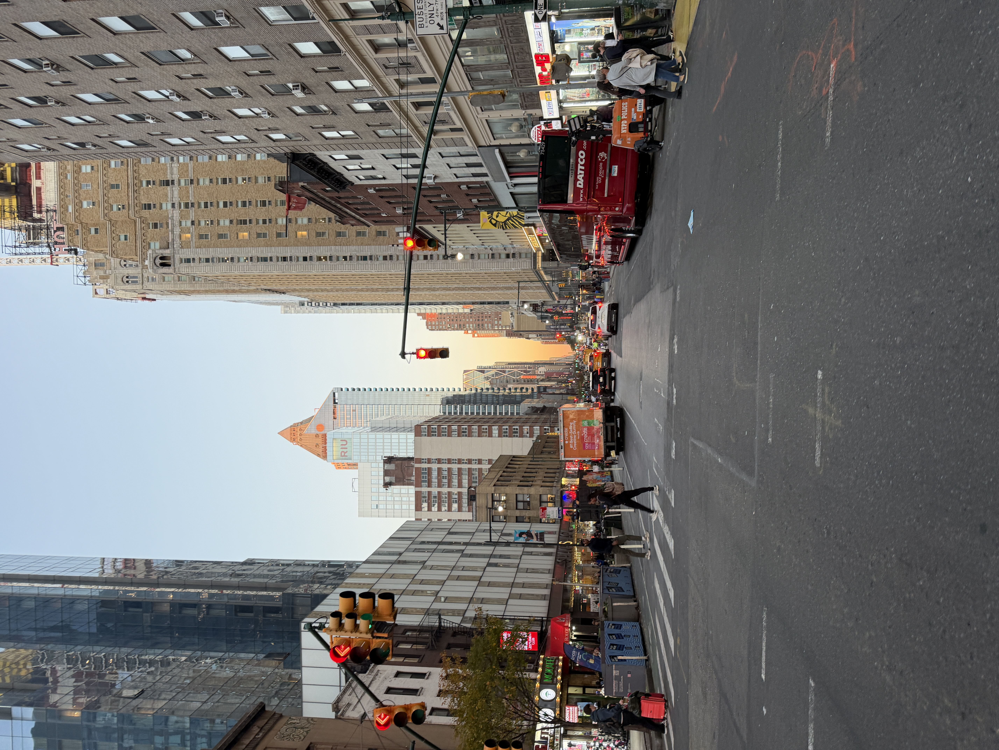
03
Color Mood Board
I collected colors from the visual environment around Times Square and organized them into a mood board. This collection allows me to consider how the visual atmosphere of the city might relate to the intensity and character of its sounds.
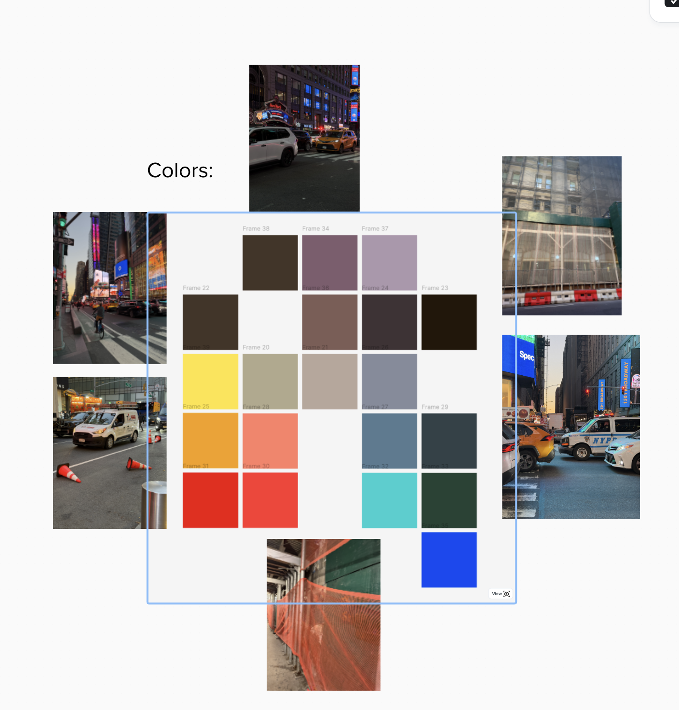
Color palette collected during field observation.
04
Textures & Collected Objects
I noticed that lights and traffics are a big part of the noises, which makes the visual picture of Time Square. These details offer another way to understand the urban environment beyond sound.
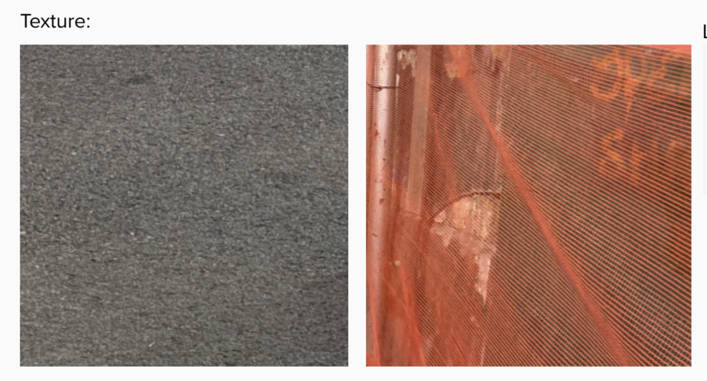
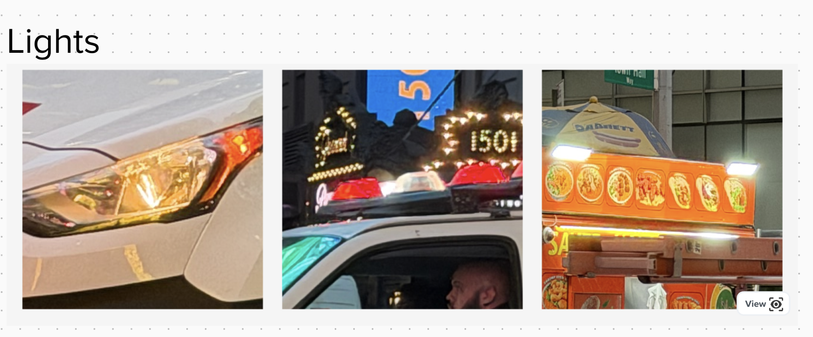
05
Field Research Reflection
During my field research around Times Square, I realized that disruptive sounds are not only defined by their volume, but also by how they interact with the surrounding environment. While collecting audio recordings and photographs, I noticed how different sounds overlap with the constant movement, like while I was walking or inside my apartment, these noises become a part of life. They are also what made the visual information and activities of the city. I notice that the environment actually are very consistent with the sound. The bright colors, crowded spaces, and different textures seem to reflect the intensity and complexity of the urban soundscape.
This experience encouraged me to think about how sound could be translated into visual elements such as color, shape, texture, and repetition. Moving forward, I want to explore how these visual qualities can communicate not only what disruptive sounds are like, but also how people experience them differently.